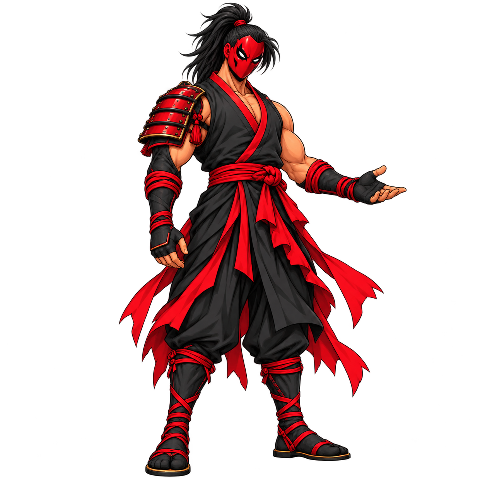
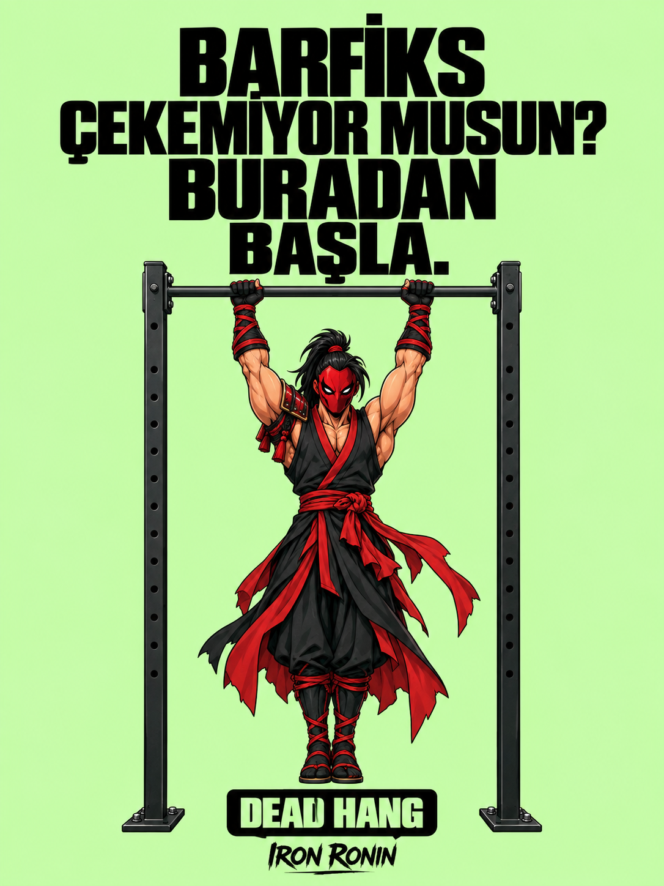
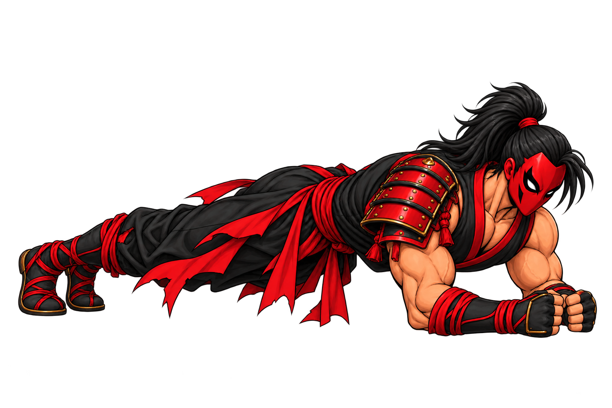
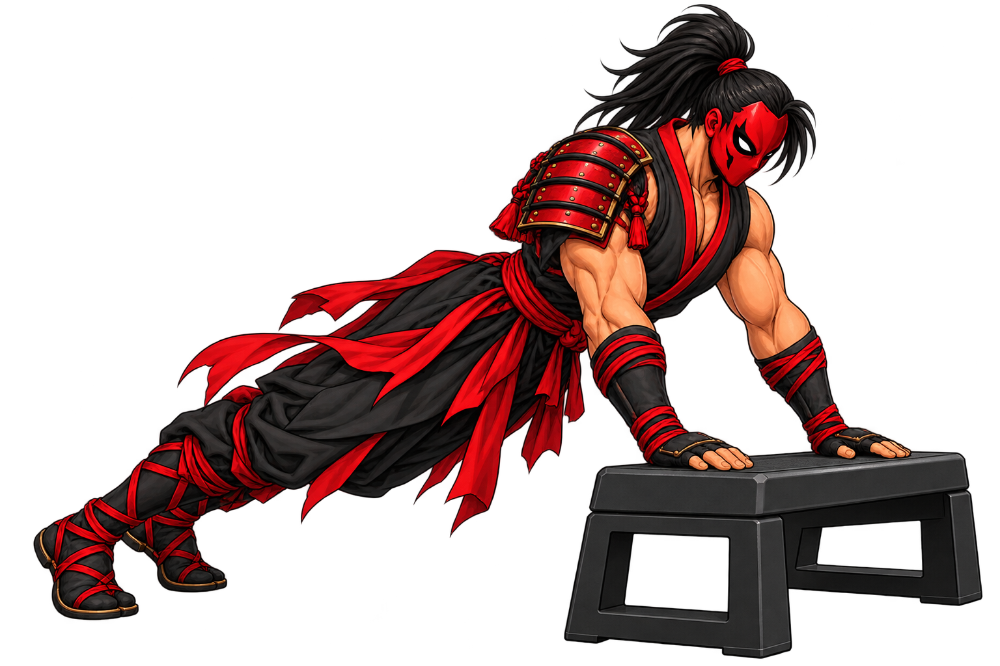
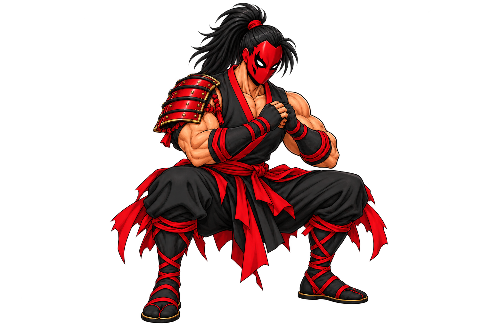
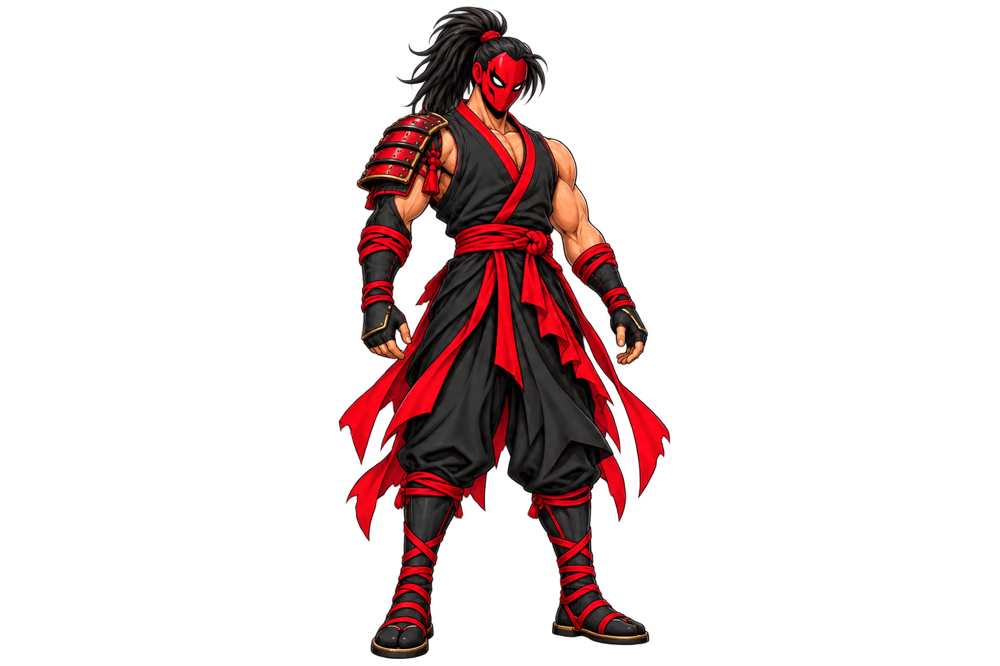
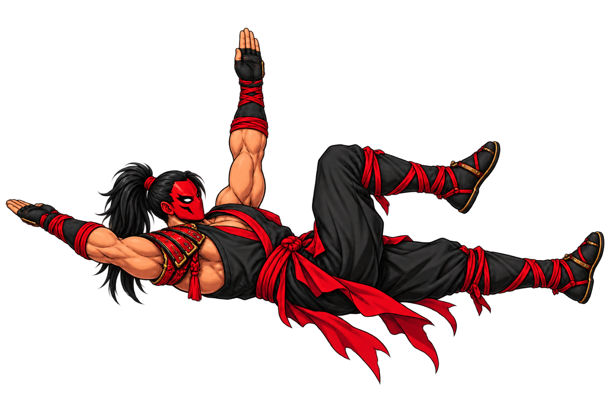
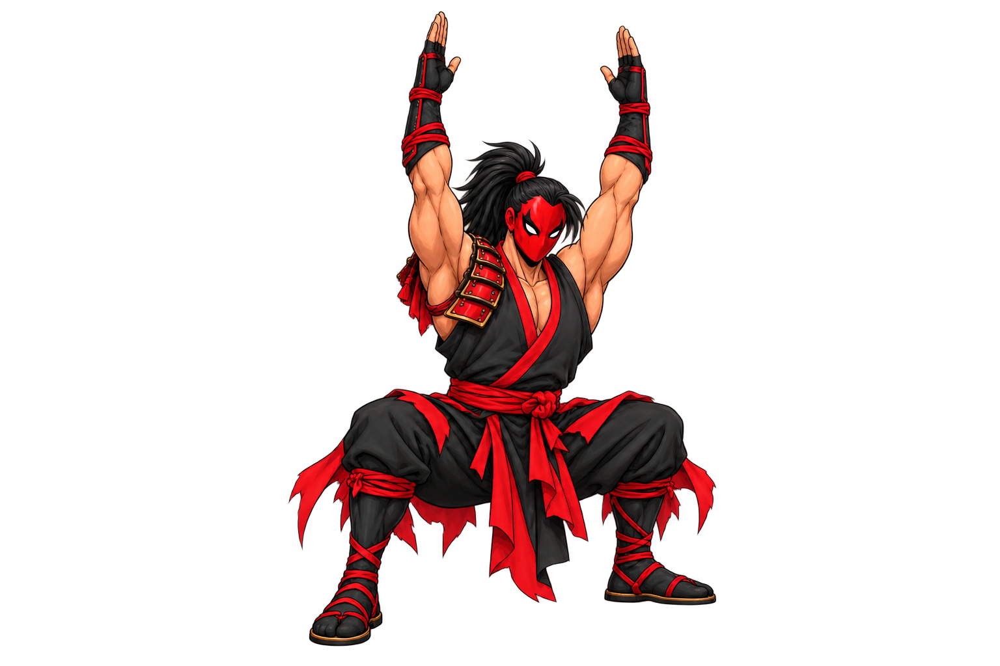
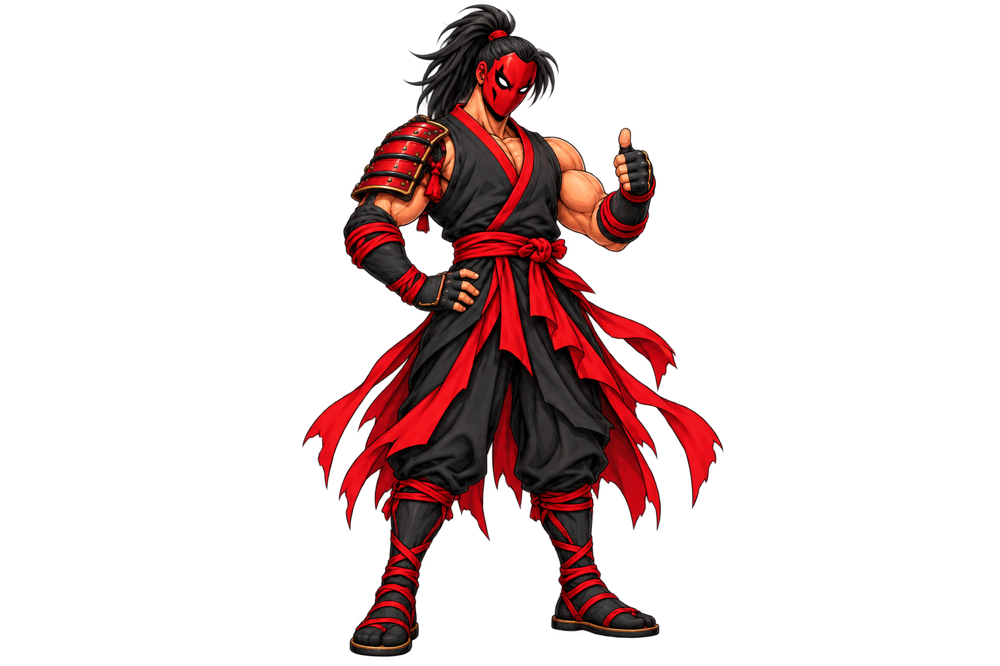

◌
No clear starting point
Follow a simple sequence instead of guessing what to do next.
FREE 7-DAY HOME TRAINING PROTOCOL
Start training at home with a simple, no-equipment strength, core, and discipline protocol.
If you do not know where to start, complete just the first level today.
GET THE FREE PDF ↗Leave your email. Your starter protocol is ready.


START HERE
Follow a simple sequence instead of guessing what to do next.
Ten to fifteen minutes is short enough to repeat and strong enough to matter.
Use clear movement options and build control before intensity.
SAMURAI STARTER PROTOCOL
One focused task per day. Each task is a small repeatable step toward a stronger routine.

Wake up your centre with a short plank and breathing practice.

Find the variation that lets you train with control.

Build your base with clean depth and steady alignment.

Open the hips, shoulders, and back with gentle movement.

A short, controlled session that respects your back.

Bring the first five days together in one focused flow.

Compare your starting point and choose what comes next.
THE METHOD
Leave your email and receive the complete starter protocol.
Train for 10–15 minutes and choose the easier option when needed.
Finish day seven, review your level, and take the next step.
INSIDE THE PROTOCOL
TAKE A LOOK INSIDE
Every page focuses on one clear task. Open it, train, and check it off.
Get your copy ↗START TODAY
Get the Samurai Starter Protocol PDF and begin your first no-equipment session today.
WELCOME TO SAMURAI MINDSET
Your PDF is ready. Download it below and complete day one.
DOWNLOAD THE PDF ↗FREQUENTLY ASKED QUESTIONS
It is for anyone who wants to start training at home, return to a routine, or build a consistent first week.
No. The protocol is designed to start without equipment. A mat is useful but optional.
About 10–15 minutes. The PDF explains the movement sequence, rest, and suggested variations.
Stop the movement, switch to an easier option, and consult an appropriate health professional when needed. This is general educational content.
SAMURAI MINDSET